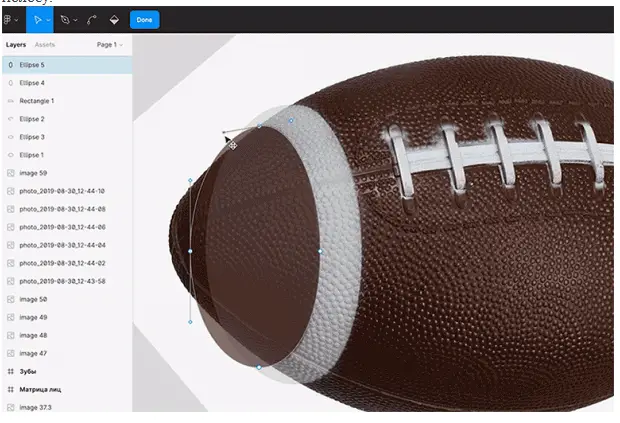

Левая белая полоска
Чтобы её сделать, воспользуйтесь хитростью с наложением слоёв:
- Создайте круг и с помощью одной из его сторон повторите внешний левый край полоски.
- Создайте ещё один круг и с его помощью повторите внутренний правый край полоски. Важно, чтобы этот
круг в палитре слоёв находился ниже предыдущего.
- В режиме векторного редактора подправьте оба круга, чтобы они точно повторяли изгибы полоски. Для
удобства укажите непрозрачность кругов на 50%, чтобы видеть и сами фигуры, и контуры мяча.
- Выделите обе фигуры, нажмите на панели инструментов на иконку и в выпадающем списке выберите .
В результате видимой останется только та часть, в которой ваши круги не пересекаются, — она
и образует
белую полосу.
